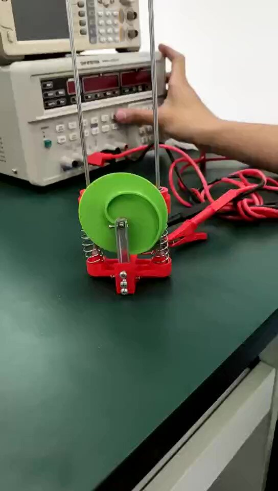

Early Attempts
It was May 2019. Prof. Jaehyung Ju’s VM350 required student to make a vehicle which climbed onto a 6cm-tall stage and crawled into a 9cm height tunnel. All previous-year students made transformable wheels, which expanded to climb and shrinked to crawl. I was arrogant and adventurous. I wanted my vehicle to jump instead of climb.
My classmates persuaded me not to go for it: “Be smart. A risky new design will not earn you good grade.” I was speechless. Prof. Ju encouraged me to go for it. I appreciated his encouragement very much. He let me know, that I was not considered crazy. My passion could be accepted and even understood.
I believe that the key of jumping is to release energy in a short time. Acceleration of motor is too slow for jumping. Thus, I need a kinematic pair which decouple “foot” from motor during jumping. Cam and follower constrained by double-linear-bearing is one such candidate.
After first failed prototype, I saw Parrot’s design. It used the exactly same mechanism, and it worked. So I believe my design will work as well. After three iterations, my design works.

Acknowledgement:
Influenced by Parrot’s Jumping Sumo (Their design was fantastic!)